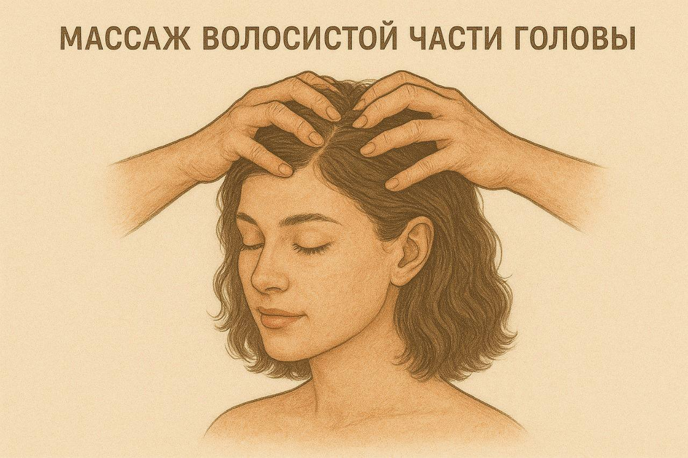
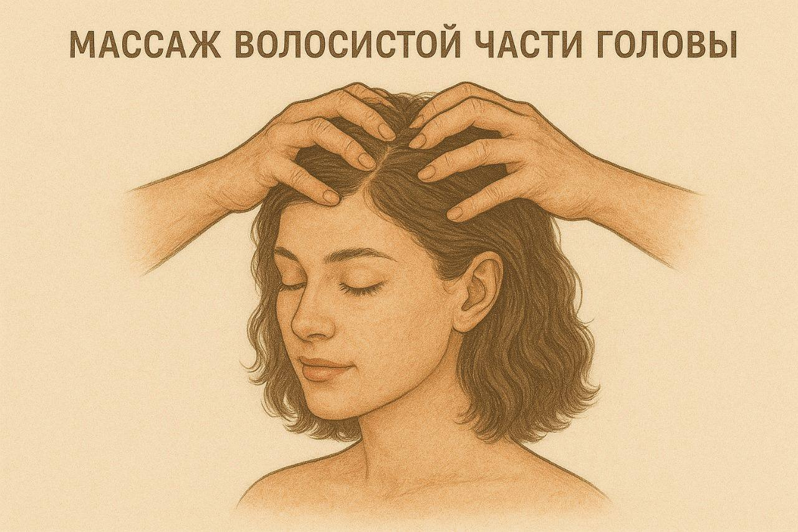

Введение
Заболевания опорно-двигательного аппарата представляют собой одну из наиболее распространенных проблем здравоохранения во всем мире. Они затрагивают людей всех возрастов и приводят к снижению качества жизни, ограничению трудоспособности и инвалидизации. Лечебный массаж имеет ряд преимуществ перед медикаментозной терапией, особенно в лечении заболеваний опорно-двигательного аппарата, нервной системы и других хронических заболеваний. Он является безопасным, эффективным и приятным методом лечения, который может применяться как самостоятельно, так и в сочетании с другими методами терапии. Его многогранное воздействие на организм человека делает его ценным инструментом в руках медицинских специалистов различных областей. В настоящее время нет такого медицинского учреждения — где бы ни применялся этот эффективный лечебный метод.
Методика массажа при заболевании суставов
Причина: артрит и артрозы различной этиологии, дегенеративные заболевания (остеопороз); Положение пациента: массаж нижних конечностей - лежа, массаж верхних конечностей - сидя.
Длительность курса: 12 процедур, через день по 10-15 минут.
- Воздействие на паравертебральные зоны, соответствующие спинномозговым сегментам, связанным с суставом.
- Массаж мышц и сухожилий, расположенных как проксимальнее, так и дистальнее больного сустава; начинают воздействие с проксимальных отделов.
- Массаж здоровых симметричных суставов, при необходимости проводится отсасывающий массаж для уменьшения выпотов и отеков.
- Массаж самого больного сустава и его сумочно-связочного аппарата, включая поглаживание и растирание. Массируется вся поверхность сустава и прилегающие области, затем переходят к связкам. Особенно тщательно прорабатываются места прикрепления сухожилий, сухожильные влагалища и суставные сумки.
- Проведение пассивных и активных движений в больном суставе.
Методика массажа при шейном остеохондрозе
причина: дегенеративный процесс в межпозвонковых дисках в следствие постоянной повышенной нагрузки на позвоночник; Положение пациента: лежа на животе, лежа на спине, сидя (голова на валике).
Длительность: 12 процедур ежедневно по 15-20 минут.
- Массаж волосистой части головы с разминанием от затылочного бугра в направлении к темени.
- Массаж височной и лобной области.
- Массаж паравертебральных областей снизу вверх до сегмента С4, выполняется плоскостным и обхватывающим разминанием в медленном темпе.
- Массаж верхней конечности, межлопаточных областей, межреберных промежутков, а также грудино-ключично-сосцевидных и больших грудных мышц.
- Сотрясение грудной клетки.
- Избирательный массаж в зонах триггерных точек, расположенных в паравертебральной области и межостистых промежутках шеи, межлопаточной области, периартикулярно плечевых суставов и над трапециевидными мышцами.
- Массаж мышц живота по общепринятой методике, включающий поглаживание и разминание.
- Выполнение дыхательных упражнений и упражнений для укрепления мышц шеи, плечевого пояса и верхних конечностей.
 

Методика массажа при поясничном остеохондрозе
причина: дегенеративный процесс в межпозвонковых дисках в следствие постоянной повышенной нагрузки на позвоночник; Положение пациента: лежа на животе.
Длительность курса: 12 процедур ежедневно или через день по 15-20 минут.
- Массаж паравертебральных зон соответствующих сегментов (крестец, нижний грудной отдел), с использованием приемов поглаживания, растирания и разминания.
- Массаж ягодичных мышц, области крестца и гребней подвздошных костей, применяя поглаживание, растирание, вибрацию; основной массажный прием здесь — разминание.
- Сотрясение таза.
- Массаж триггерных точек, используя такие приемы, как глубокое растирание, вибрация и пунктирование.
- Выполнение активных и пассивных движений в суставах нижних конечностей.
Методика массажа при ушибах и растяжениях капсульно-связочного аппарата
Причина: травмы и вывихи суставов; Положение пациента: лежа или сидя.
Длительность курса: 15-20 минут ежедневно, 12-15 процедур. ! Массаж показан со 2–3-го дня после травмы.
Последовательность и особенности массажа: ! В первые 2–3 дня выполняется дренажный массаж выше места повреждения, при этом поврежденный сустав должен быть зафиксирован. ! Массаж проводится ежедневно в течение 5–10 минут по направлению венозного оттока. у спины, дельтоиды, а также грудино-ключичный и ключично-акромиальный суставы пораженной стороны.
- На поврежденных мышцах - разминание и вибрация.
- На суставных структурах (сумки, влагалища, сухожилия, места крепления) - поглаживание и глубокое растирание.
- Массаж симметричных неповрежденных сегментов, паравертебральных и рефлексогенных зон.
- При травмах нижних конечностей - дополнительно поясничные симпатические узлы, ягодицы, таз.
- При травмах верхних конечностей - дополнительно шейные симпатические узлы, мышцы шеи, груди, плеча, суставы плечевого пояса.
- Массаж паравертебральных зон - снизу вверх.
- Комбинировать с физическими упражнениями.
Методика массажа при сколиозе 2-3 степени
Причина: сутулость, неправильная осанка, нарушение обмена веществ, ассиметрия частей тела; Положение пациента: лежа на животе, лежа на боку (на противоположной стороне грудного искривления) и лежа на спине.
Длительность курса: 12-15 процедур, 15-20 минут ежедневно.
Последовательность и особенности массажа: ! Показан дифференцированный массаж мышц спины и живота с более интенсивным тонизирующим воздействием на вогнутой стороне искривления и седативным - на выпуклой. А Вид сзади.
- расслабление и растягивание верхней порции трапециевидной мышцы.
- укрепление длинных мышц в области грудного сколиоза, реберного выступа и снижение его высоты ритмическим надавливанием на ребра.
- расслабление и растягивание запавших мышц в области поясничной вогнутости.
- оттягивание крыла подвздошной кости.
- укрепление мышечного валика, снижение его высоты и формирование талии.
- расслабление и растягивание межреберных мышц и связок в области грудной вогнутости.
- оттягивание угла лопатки.
- укрепление мышц над лопаткой и верхней порции трапециевидной мышцы Б Вид спереди.
- укрепление мышц плечевого пояса и грудных мышц.
- укрепление мышц в области переднего реберного горба и выравнивание его надавливанием по направлению кзади.
- укрепление мышц брюшного пресса.
- выравнивание реберных дуг, захватывая их от позвоночника и направляя кпереди.
- расслабление грудных мышц и оттягивание плеча назад к плоскости.